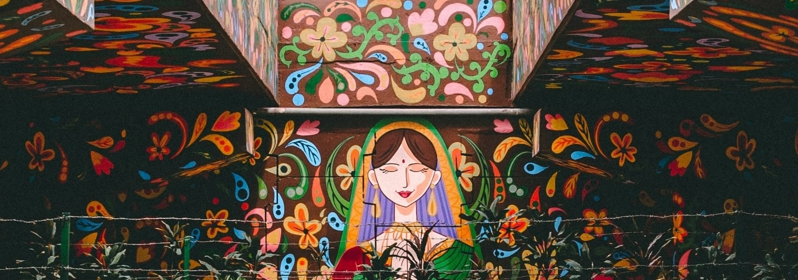
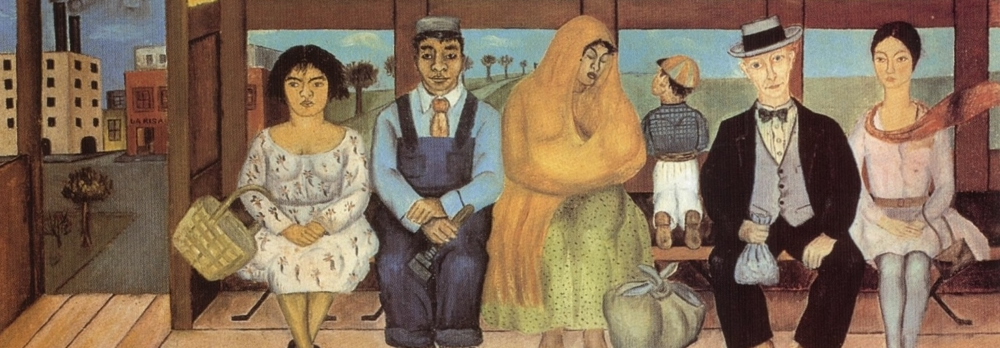
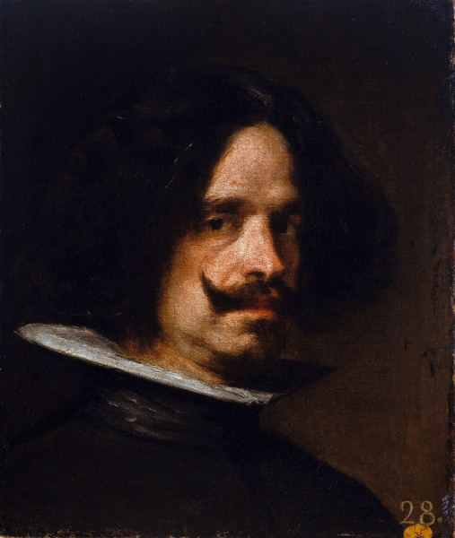

Casa de Artisté
Our Mission
Casa de Artisté is a website dedicated to showcasing the works of influential Hispanic artists. Our mission is to provide a platform for these artists to share their unique perspectives and cultural heritage with a wider audience. We believe that art and culture has the power and ability to inspire, educate, and connect people from all walks of life, and we are committed to promoting diversity and inclusivity in the art world and society.
About Casa de Artisté
Casa de Artisté “House of the artist” provides users with a museum-inspired digital design and experience. Embracing and celebrating influential Hispanic artists. Along with their artworks, culture, and who they were as a person. And educating culturally curious visitors and inspiring art students.
Featured Artist

Diego Velázquez
Featured Artwork